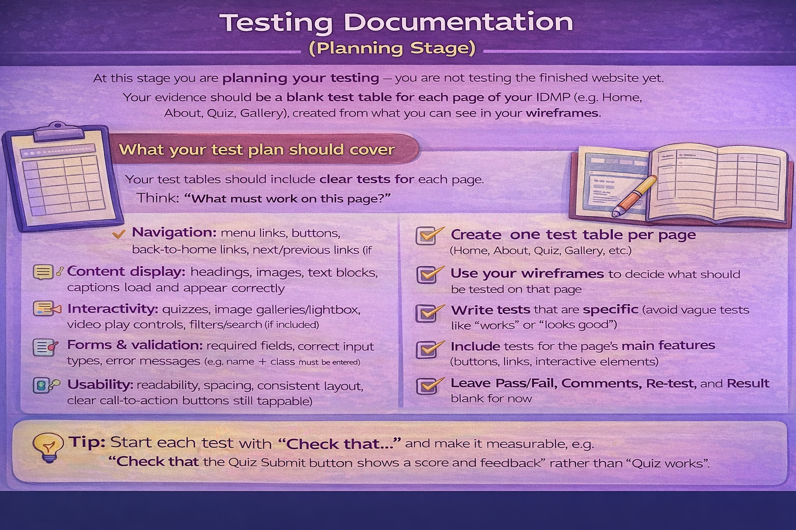

Task 1B(iii) Testing documentation
Decide how you will test/check the website and create a test plan.
Testing Documentation (Planning Stage)
At this stage you are planning your testing — you are not testing the finished website yet. Your evidence should be a blank test table for each page of your IDMP (e.g. Home, About, Quiz, Gallery), created from what you can see in your wireframes.
What your test plan should cover
Your test tables should include clear tests for each page. Think: “What must work on this page?”
- Navigation: menu links, buttons, back-to-home links, next/previous links (if used)
- Content display: headings, images, text blocks, captions load and appear correctly
- Interactivity: quizzes, image galleries/lightbox, video play controls, filters/search (if included)
- Forms & validation: required fields, correct input types, error messages (e.g. name + class must be entered)
- Usability: readability, spacing, consistent layout, clear call-to-action buttons
- Responsive design: mobile vs desktop layout still works (no overlapping text, buttons still tappable)
- Accessibility (basic): good colour contrast, readable font sizes, clear labels on inputs
How to present evidence
For this task, your evidence is the test table template (planned tests) for each page. You will fill in Pass/Fail, comments and re-tests later once the IDMP is completed.
- Create one test table per page (Home, About, Quiz, Gallery, etc.)
- Use your wireframes to decide what should be tested on that page
- Write tests that are specific (avoid vague tests like “works” or “looks good”)
- Include tests for the page’s main features (buttons, links, interactive elements)
- Leave Pass/Fail, Comments, Re-test, and Result blank for now
- Save/export your test tables (screenshots or document) as evidence in your project log
Tip: Start each test with “Check that…” and make it measurable, e.g. “Check that the Quiz Submit button shows a score and feedback” rather than “Quiz works”.